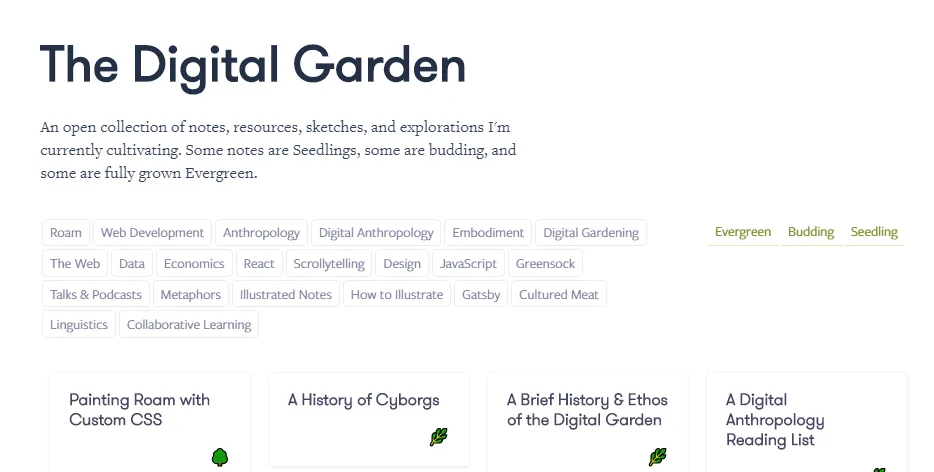

O que é?
O Jardin Digital representa uma inovadora abordagem para a criação de conteúdo online, transcendendo o convencional modelo de blog.
Enquanto os blogs tradicionais foram gradualmente absorvidos pelo domínio do marketing digital, resultando em espaços frequentemente inundados por publicidade disfarçada de conteúdo, o Jardin Digital surge como uma alternativa para aqueles que verdadeiramente apreciam a arte da escrita. Este novo modelo visa proporcionar um ambiente onde os entusiastas possam expressar-se livremente, explorar ideias inovadoras e cultivar uma comunidade dedicada à paixão pela escrita.
A imagem acima demonstra um exemplo de um Jardin Digital.
Cultivando Informações
Mark Bernstein já destacou a ideia do "Jardim do Hipertexto", conceituando-o como um espaço na internet interligado por links. Nessa perspectiva, os Jardins Digitais surgem como ambientes de expressão, proporcionando a oportunidade de aprofundamento em conhecimentos específicos ou temas, de maneira gradual e sujeita a constante edição. Em outras palavras, eles permitem a representação das visões pessoais por meio da organização e criação de hipertextos.
Segundo a pesquisa do MIT: "O conceito de jardinagem nos remete a algo em evolução, de frutificação lente e que é mantido pelo prazer da prática."
Uma internet mais lenta
Blog x Jardin Digital
Segundo Critchlow "Com o Blog, você está falando para um grande público, enquanto que com o jardin digital, você está falando consigo mesmo. Você se concentra no que deseja cultivar ao longo do tempo."
O Jardim Digital destina-se a autores e autoras que buscam expressar-se de maneira livre, utilizando a internet como matéria-prima para suas explorações. Funcionando como uma espécie de blog de longo prazo, esse ambiente permite que os autores se aprofundem em seus temas de interesse, buscando tanto aprender quanto compartilhar conhecimentos mais aprofundados sobre os assuntos abordados.